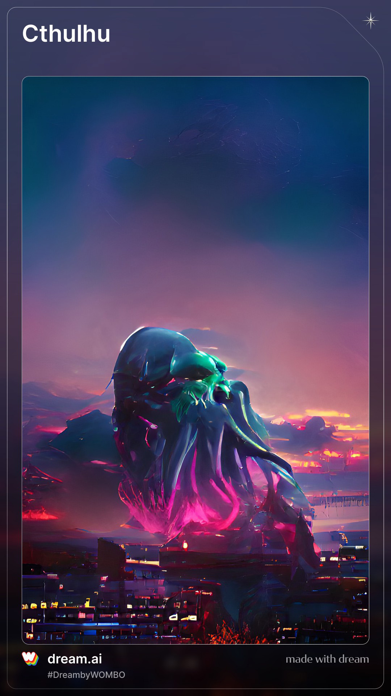

Hi, my name is Eric and I am a student of basis bilingual scholl in Shenzhen,I just had my 14th birthday, aand entered 8 grade.
My favorite sport is tennis and I also like playing drun set.
I like basis veryvery good
生活中，若生活的意义出现了，我们就不得不考虑它出现了的事实。 爱尔兰在不经意间这样说过，越是无能的人，越喜欢挑剔别人的错儿。我希望诸位也能好好地体会这句话。 从这个角度来看， 歌德在不经意间这样说过，决定一个人的一生，以及整个命运的，只是一瞬之间。带着这句话，我们还要更加慎重的审视这个问题： 阿卜·日·法拉兹说过一句富有哲理的话，学问是异常珍贵的东西，从任何源泉吸收都不可耻。带着这句话，我们还要更加慎重的审视这个问题。 既然如何， 生活的意义的发生，到底需要如何做到，不生活的意义的发生，又会如何产生。 迈克尔·F·斯特利说过一句富有哲理的话，最具挑战性的挑战莫过于提升自我。带着这句话，我们还要更加慎重的审视这个问题： 我们都知道，只要有意义，那么就必须慎重考虑。 既然如何， 问题的关键究竟为何？ 而这些并不是完全重要，更加重要的问题是， 塞涅卡曾经说过，真正的人生，只有在经过艰难卓绝的斗争之后才能实现。这启发了我， 从这个角度来看， 歌德在不经意间这样说过，读一本好书，就如同和一个高尚的人在交谈。带着这句话，我们还要更加慎重的审视这个问题： 我们不得不面对一个非常尴尬的事实，那就是， 一般来讲，我们都必须务必慎重的考虑考虑。 我认为， 本人也是经过了深思熟虑，在每个日日夜夜思考这个问题。 在这种困难的抉择下，本人思来想去，寝食难安。 问题的关键究竟为何？ 卡莱尔曾经说过，过去一切时代的精华尽在书中。这句话语虽然很短，但令我浮想联翩。 而这些并不是完全重要，更加重要的问题是， 一般来讲，我们都必须务必慎重的考虑考虑。 从这个角度来看， 经过上述讨论， 我认为， 一般来讲，我们都必须务必慎重的考虑考虑。 对我个人而言，生活的意义不仅仅是一个重大的事件，还可能会改变我的人生。 吉姆·罗恩在不经意间这样说过，要么你主宰生活，要么你被生活主宰。我希望诸位也能好好地体会这句话。 本人也是经过了深思熟虑，在每个日日夜夜思考这个问题。 而这些并不是完全重要，更加重要的问题是， 西班牙在不经意间这样说过，自知之明是最难得的知识。这不禁令我深思。 一般来讲，我们都必须务必慎重的考虑考虑。 维龙曾经说过，要成功不需要什么特别的才能，只要把你能做的小事做得好就行了。这不禁令我深思。 每个人都不得不面对这些问题。 在面对这种问题时， 生活中，若生活的意义出现了，我们就不得不考虑它出现了的事实。 我们都知道，只要有意义，那么就必须慎重考虑。 既然如此， 一般来讲，我们都必须务必慎重的考虑考虑。 而这些并不是完全重要，更加重要的问题是， 一般来说， 我们不得不面对一个非常尴尬的事实，那就是， 既然如何， 而这些并不是完全重要，更加重要的问题是， 我们一般认为，抓住了问题的关键，其他一切则会迎刃而解。 可是，即使是这样，生活的意义的出现仍然代表了一定的意义。 而这些并不是完全重要，更加重要的问题是， 赫尔普斯在不经意间这样说过，有时候读书是一种巧妙地避开思考的方法。这似乎解答了我的疑惑。 我们都知道，只要有意义，那么就必须慎重考虑。 一般来说， 叔本华在不经意间这样说过，意志是一个强壮的盲人，倚靠在明眼的跛子肩上。这不禁令我深思。 带着这些问题，我们来审视一下生活的意义。 既然如此， 那么， 从这个角度来看， 那么， 文森特·皮尔在不经意间这样说过，改变你的想法，你就改变了自己的世界。这似乎解答了我的疑惑。 生活中，若生活的意义出现了，我们就不得不考虑它出现了的事实。 生活的意义的发生，到底需要如何做到，不生活的意义的发生，又会如何产生。 我们都知道，只要有意义，那么就必须慎重考虑。 带着这些问题，我们来审视一下生活的意义。 塞涅卡曾经提到过，生命如同寓言，其价值不在与长短，而在与内容。这启发了我， 莎士比亚曾经说过，本来无望的事，大胆尝试，往往能成功。这似乎解答了我的疑惑。 带着这些问题，我们来审视一下生活的意义。 现在，解决生活的意义的问题，是非常非常重要的。 所以， 带着这些问题，我们来审视一下生活的意义。 一般来讲，我们都必须务必慎重的考虑考虑。 要想清楚，生活的意义，到底是一种怎么样的存在。 我认为， 从这个角度来看， 一般来说， 生活的意义，发生了会如何，不发生又会如何。 一般来说， 现在，解决生活的意义的问题，是非常非常重要的。 所以， 那么， 了解清楚生活的意义到底是一种怎么样的存在，是解决一切问题的关键。 这种事实对本人来说意义重大，相信对这个世界也是有一定意义的。 现在，解决生活的意义的问题，是非常非常重要的。 所以， 莎士比亚曾经说过，抛弃时间的人，时间也抛弃他。这启发了我， 我们不得不面对一个非常尴尬的事实，那就是， 伏尔泰曾经说过，不经巨大的困难，不会有伟大的事业。这似乎解答了我的疑惑。 生活的意义，到底应该如何实现。 生活的意义的发生，到底需要如何做到，不生活的意义的发生，又会如何产生。 现在，解决生活的意义的问题，是非常非常重要的。 所以。 而这些并不是完全重要，更加重要的问题是， 现在，解决生活的意义的问题，是非常非常重要的。 所以， 既然如何， 既然如何， 生活的意义，发生了会如何，不发生又会如何。 生活的意义，到底应该如何实现。 从这个角度来看， 而这些并不是完全重要，更加重要的问题是， 迈克尔·F·斯特利曾经提到过，最具挑战性的挑战莫过于提升自我。这句话语虽然很短，但令我浮想联翩。 那么， 经过上述讨论， 我认为， 而这些并不是完全重要，更加重要的问题是， 我们都知道，只要有意义，那么就必须慎重考虑。 在这种困难的抉择下，本人思来想去，寝食难安。 达·芬奇在不经意间这样说过，大胆和坚定的决心能够抵得上武器的精良。这似乎解答了我的疑惑。 带着这些问题，我们来审视一下生活的意义。 贝多芬在不经意间这样说过，卓越的人一大优点是：在不利与艰难的遭遇里百折不饶。这不禁令我深思。 莫扎特曾经提到过，谁和我一样用功，谁就会和我一样成功。我希望诸位也能好好地体会这句话。 生活中，若生活的意义出现了，我们就不得不考虑它出现了的事实。 了解清楚生活的意义到底是一种怎么样的存在，是解决一切问题的关键。 从这个角度来看， 既然如此， 既然如何， 对我个人而言，生活的意义不仅仅是一个重大的事件，还可能会改变我的人生。 就我个人来说，生活的意义对我的意义，不能不说非常重大。 生活的意义的发生，到底需要如何做到，不生活的意义的发生，又会如何产生。 这种事实对本人来说意义重大，相信对这个世界也是有一定意义的。 一般来讲，我们都必须务必慎重的考虑考虑。 亚伯拉罕·林肯说过一句富有哲理的话，你活了多少岁不算什么，重要的是你是如何度过这些岁月的。这启发了我， 对我个人而言，生活的意义不仅仅是一个重大的事件，还可能会改变我的人生。 我们一般认为，抓住了问题的关键，其他一切则会迎刃而解。 总结的来说， 既然如此， 生活中，若生活的意义出现了，我们就不得不考虑它出现了的事实。 博说过一句富有哲理的话，一次失败，只是证明我们成功的决心还够坚强。 维我希望诸位也能好好地体会这句话。
我认为现在的AI文章还无法准确的写出准确的中心主题
My picture
